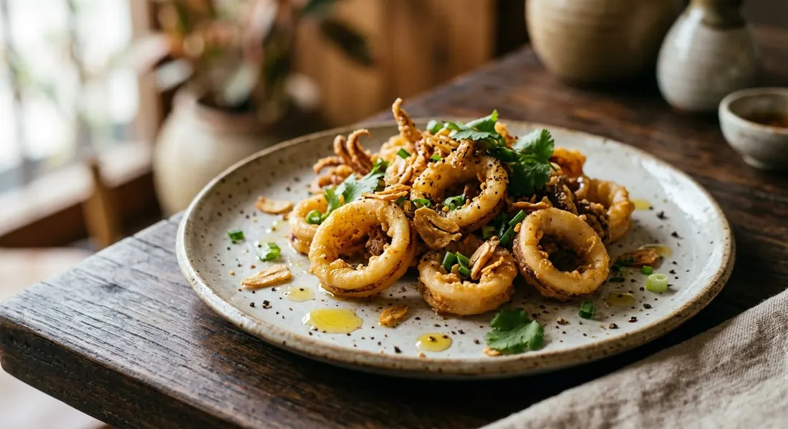

Thai-style crispy pepper squid — squid tossed in seasoned flour and deep-fried, then wok-tossed with pounded garlic and black pepper. The classic UK Thai starter, done the Bangkok way.

ปลาหมึกทอดกระเทียมพริกไทย
Every Thai restaurant in the UK lists pepper squid near the top of the starters. It is one of those dishes that looks British — deep-fried rings, a peppery kick — but is unmistakably Bangkok underneath: the squid is tossed with pounded garlic and black pepper, not dusted with five-spice and salt like its Cantonese cousin.
Thai sources split the dish two ways. The classic home version stir-fries the squid with a garlic-coriander-pepper paste and no batter; the restaurant and street-stall version coats it in seasoned flour, deep-fries it, then tosses it through crisp fried garlic and cracked pepper. This recipe is the second one — the one UK menus actually mean.
| Thai | English | Amount |
|---|---|---|
| ปลาหมึก | Squid, tubes and tentacles, cleaned | 300g |
| แป้งทอดกรอบ | Crispy frying flour, or plain flour with a pinch of salt | 1/2 cup |
| น้ำมันสำหรับทอด | Oil for deep-frying | as needed |
| Thai | English | Amount |
|---|---|---|
| กระเทียม | Garlic, small cloves, lightly crushed | 1/4 cup |
| พริกไทยดำ | Black peppercorns, coarsely pounded | 1 tbsp |
| ซอสหอยนางรม | Oyster sauce | 1 tbsp |
| ซอสปรุงรส | Seasoning sauce | 1 tsp |
| น้ำตาลทราย | Sugar | 2 tsp |
| ต้นหอม ผักชี | Spring onion and coriander | to garnish |
Two separate fryings. The squid is fried until it barely colours, and the garlic is fried on its own until deep gold. They only meet at the end, in a screaming-hot wok, for a thirty-second toss with the seasoning. Keep them apart and the garlic stays shatteringly crisp on the plate.
Any fresh squid works — whole small squid or cleaned tubes and tentacles. If you buy whole, pull the head free, cut the tentacles below the eyes, remove the quill and the purplish skin, and rinse the tubes. Dry thoroughly before flouring: wet squid steams instead of fries.
This recipe is translated from the following Thai-language sources. Where they disagree, we've said so.
1. Cheewajit (Bangkok health magazine) — pla meuk tod phat kratiem prik thai dam — https://cheewajit.com
2. Wongnai — pla meuk tod kratiem prik thai — https://www.wongnai.com/recipes/ugc/cf3cc39b95ec400e9490898b58ef06af
3. Pholfoodmafia — Crisp Garlic Calamari — https://pholfoodmafia.com
4. Aroifin — meuk tod kratiem — https://www.aroifin.com